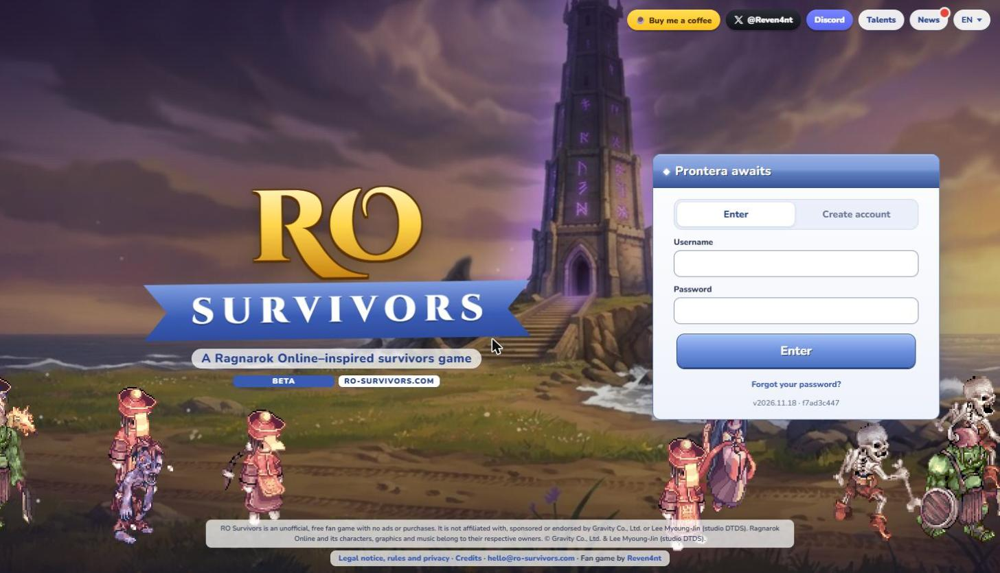
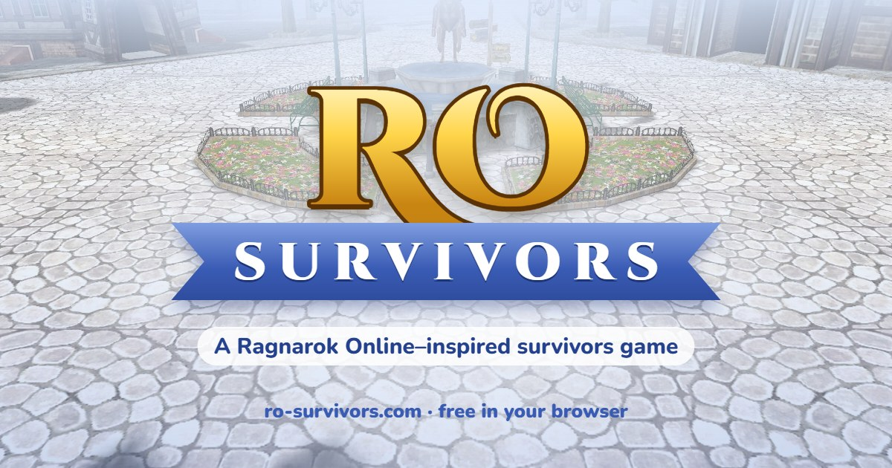
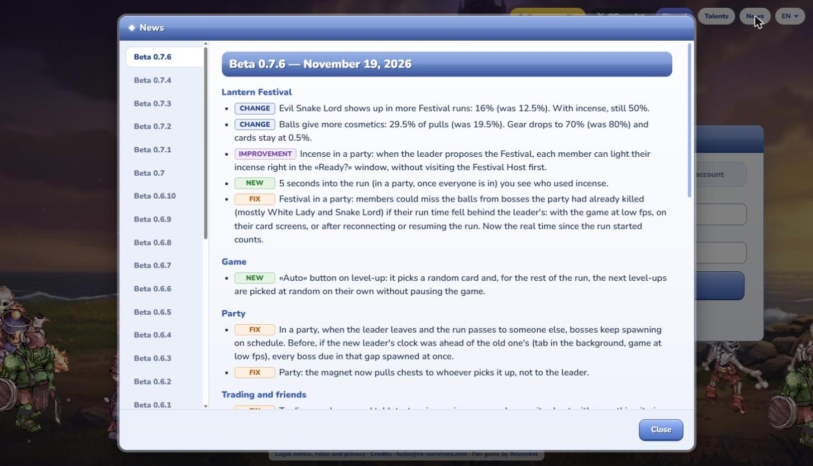
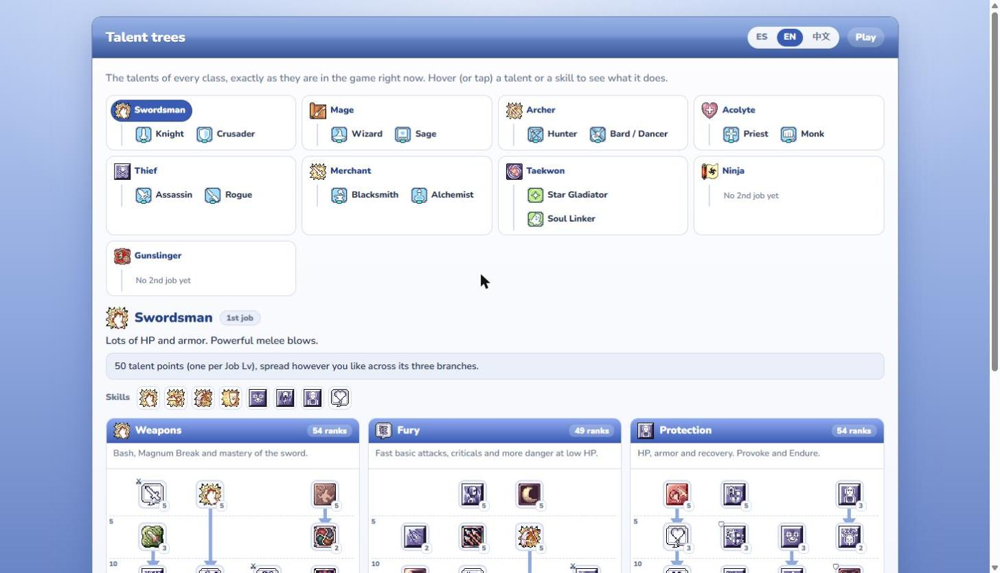
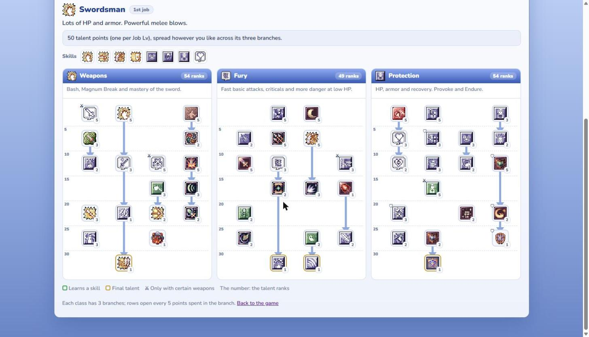
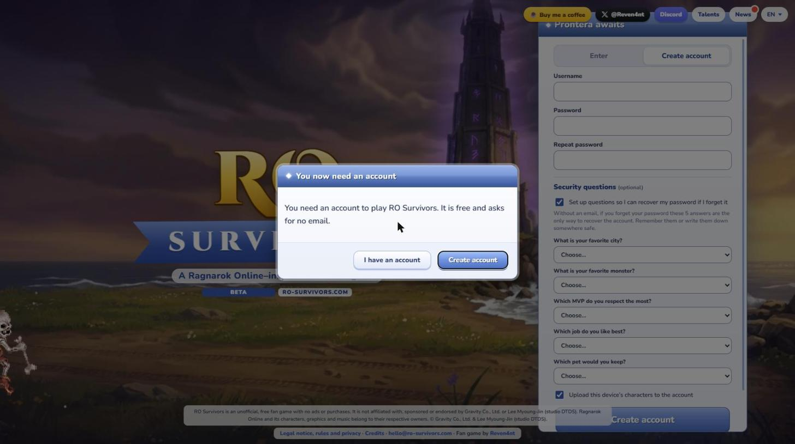

Game Analysis · เอกสารภายใน
เกมแฟนเมดแนว survivors บนเบราว์เซอร์ ที่ใช้โลกและกราฟิกของ Ragnarok Online · วิเคราะห์ระบบทั้งเกม ข้อดีข้อเสีย และเทียบกับ Ragnarok: Endless Trail

ผมไม่ได้เล่นเกมนี้ด้วยมือ เพราะเกมบังคับสร้างบัญชีก่อนเล่น และการสร้างบัญชีต้องให้คุณเป็นคนทำ เอกสารนี้จึงไม่มีภาพขณะเล่นจริง และไม่มีความเห็นเรื่องความรู้สึกตอนบังคับตัวละคร
สิ่งที่ตรวจจริงมี 4 แหล่ง ทุกข้อในเอกสารมีป้ายบอกที่มา
หน้าแรก หน้า News ครบ 29 เวอร์ชัน หน้า Talents หน้าเครดิต และหน้ากฎหมาย
ข้อความในเกมราว 4,970 ข้อความ และตารางค่าของด่าน อาชีพ และมอนสเตอร์ ที่อยู่ในไฟล์สคริปต์สาธารณะ
ผลค้นหาเว็บ ข่าวทางการของ Endless Trail บน gnjoy.asia และสื่อเกมมือถือ
ข้อสรุป ข้อดีข้อเสีย และข้อเปรียบเทียบ ซึ่งคุณควรตรวจกับประสบการณ์ของทีม
| หัวข้อ | รายละเอียด |
|---|---|
| ประเภท | Survivors-like (แนวเดียวกับ Vampire Survivors) ผสมระบบ MMORPG ถาวร เว็บ |
| แพลตฟอร์ม | เบราว์เซอร์ทั้ง PC และมือถือ ติดตั้งเป็นแอปจากเบราว์เซอร์ได้ ไม่มีบนสโตร์ เว็บ |
| ผู้ทำ | Reven4nt ทำคนเดียว น่าจะอยู่สเปน เพราะต้นฉบับเป็นภาษาสเปนและหน้ากฎหมายอ้างหน่วยงานคุ้มครองข้อมูลของสเปน ตีความ |
| วิธีสร้าง | หน้าเครดิตระบุว่าโค้ด ข้อความส่วนใหญ่ และเครื่องมือ เขียนด้วย Claude ตามไอเดียและการออกแบบของผู้ทำ เว็บ |
| แรงบันดาลใจ | Vampire Survivors และเกมแฟนเมดแนวเดียวกันของ IP อื่น เช่น Pokémon Survivors และ Azeroth Survivors เว็บ |
| ภาษา | สเปน อังกฤษ จีนตัวเต็ม โปรตุเกสบราซิล ญี่ปุ่น และมีห้องแชทแยกภาษาจีน อินโดนีเซีย ญี่ปุ่น ข้อมูลเกม |
| ราคา | ฟรี ไม่มีโฆษณา ไม่มีการซื้อในเกม เว็บ |
| สถานะ | Beta ผู้ทำเขียนว่าอาจเปลี่ยน ล้างความคืบหน้า หรือปิดได้โดยไม่ชดเชย เว็บ |

ความเร็วในการปล่อยของคือจุดที่ผิดปกติที่สุดของโครงการนี้ ทั้งหมดอ่านจากหน้า News เว็บ
| วันที่ (2026) | เวอร์ชัน | สิ่งที่เพิ่ม |
|---|---|---|
| 3 พ.ย. | 0.1 | เบต้าสาธารณะ: 6 อาชีพ 4 ด่าน โหมดเนื้อเรื่อง สัตว์เลี้ยง 24 ตัว ลานเมืองออนไลน์ ปาร์ตี้ 3 คน เทรด 2 ภาษา |
| 4–5 พ.ย. | 0.2.1 – 0.3 | กระซิบ ตัวเลขดาเมจแบบ RO รายชื่อเพื่อน ช่างทำผม รองรับจอยเกม คำถามกู้บัญชี |
| 6 พ.ย. | 0.4 – 0.4.2 | ลดการใช้หน่วยความจำบนมือถือ แก้ปัญหา iPhone บอสไม่ทำดาเมจเมื่อแตะตัว |
| 8 พ.ย. | 0.5 | Endless Tower บรรณารักษ์ (วิกิในเกม) หน้า Talents และ Discord |
| 9 พ.ย. | 0.5.2 – 0.5.3 | ภาษาจีนตัวเต็ม แชทแบบแท็บ ย้ายเซิร์ฟเวอร์ใหม่ที่แรงขึ้น และเพิ่มคิวเข้าเกม |
| 11 พ.ย. | 0.6 – 0.6.4 | แบ่งลานเมืองเป็น 4 ล็อบบี้ บุรุษไปรษณีย์ในเกม เร่งความเร็วในหอคอย ข้ามเนื้อเรื่องได้ ภาษาโปรตุเกสจากชุมชน |
| 12–14 พ.ย. | 0.6.5 – 0.6.9 | คิวล็อกอิน สัตว์เลี้ยงพูดระหว่างรอบ ของดรอปกลับมาแสดงระหว่างรอบ เบรกสแปมแชท |
| 15 พ.ย. | 0.6.10 – 0.7.1 | อีเวนต์ตามฤดูกาล Lantern Festival ลูกบอลกาชา คอสเมติก ความสำเร็จ ภาษาญี่ปุ่น |
| 16–19 พ.ย. | 0.7.2 – 0.7.6 | ปรับอีเวนต์ ค่าความสนิทกับเพื่อน ปุ่มเลเวลอัปอัตโนมัติ ยกเลิกโหมด Guest ต้องมีบัญชีจึงเล่นได้ |

ตีความ เกมขนาดนี้ปกติใช้ทีมหลายคนหลายเดือน การที่คนเดียวปล่อยได้เร็วระดับนี้ สอดคล้องกับที่ผู้ทำบอกว่าใช้ AI เขียนโค้ด และเป็นตัวอย่างจริงว่าคู่แข่งรายย่อยผลิตเนื้อหาได้เร็วแค่ไหนในปี 2026
ตีความ ชั้น 1 ให้ความสนุกทันทีแบบเกม survivors ชั้น 2 ให้เหตุผลเล่นรอบถัดไป ชั้น 3 ให้เหตุผลกลับมาพรุ่งนี้ เกม survivors ส่วนใหญ่มีแค่ชั้น 1 กับชั้น 2 แบบบางๆ เกมนี้เอาชั้น 2 และ 3 ของ MMORPG มาใส่เต็มรูปแบบ
ทุกด่านมีเวลาตายตัว บอสออกตามนาฬิกา ขีดส้มคือมินิบอส ขีดแดงคือ MVP ข้อมูลเกม
| ด่าน | เลเวล | ความยาว | จังหวะบอส | เงื่อนไขเข้า |
|---|---|---|---|---|
| Prontera Fields | 1–8 | 15 นาที | ด่านแรก MVP คือ Mastering นาทีที่ 12 | |
| Prontera Sewers | 9–12 | 11 นาที | คะแนนอุปกรณ์ 20 · MVP Golden Thief Bug | |
| Sunken Ship | 13–15 | 13 นาที | คะแนนอุปกรณ์ 40 และผ่านเนื้อเรื่องเรือจม · MVP Drake | |
| Byalan Island | 16–20 | 15 นาที | คะแนนอุปกรณ์ 110 · MVP Kraken | |
| Payon Forest | 21–25 | 17 นาที | คะแนนอุปกรณ์ 135 · MVP Eddga | |
| Payon Cave | 26–30 | 17 นาที | คะแนนอุปกรณ์ 165 · MVP Moonlight Flower | |
| Prontera Castle | 31–35 | 1.5 นาที | เนื้อเรื่องเท่านั้น ต้อง Job Lv 50 · จบแล้วได้เปลี่ยนอาชีพขั้น 2 | |
| Lantern Festival | 26–30 | 17 นาที | อีเวนต์ตามฤดูกาล บอส 7 ตัว ดรอปลูกบอลกาชาแทนของ | |
| Orc Village · Morroc Pyramids | 31–50 | ไม่ทราบ | ไม่มีข้อมูลเวลา | มีในข้อมูลเกม คะแนนอุปกรณ์ 800 และ 1,200 ยังไม่ยืนยันว่าเปิดแล้ว |
มินิบอส MVP
ด่านแรกเริ่มที่ 1.2 ตัวต่อวินาที มีได้พร้อมกัน 40 ตัว แล้วไต่ขึ้นเป็น 3.5 ตัวต่อวินาที 140 ตัวในนาทีที่ 5–7 ข้อมูลเกม ผู้เล่นปรับเองได้อีกชั้นก่อนออกเดินทาง ด้วยแถบเลื่อน 5 ตัว คือ จำนวนศัตรู ดาเมจ HP ความเร็ว และเหตุการณ์ ยิ่งยากของยิ่งเยอะ สูงสุด ×2.5 เมื่อเล่นเดี่ยว เว็บ

| ขั้น 1 | HP | ความเร็ว | สกิลเริ่ม | ขั้น 2 |
|---|---|---|---|---|
| Swordsman | 130 | 150 | Bash | Knight · Crusader (ขี่ Peco) |
| Mage | 80 | 145 | Fire Bolt | Wizard · Sage |
| Archer | 95 | 165 | Double Strafe | Hunter · Bard / Dancer |
| Acolyte | 105 | 150 | Heal | Priest · Monk |
| Thief | 90 | 175 | Envenom | Assassin · Rogue |
| Merchant | 130 | 145 | Mammonite | Blacksmith · Alchemist |
| Taekwon | 110 | 160 | Tornado Kick | Star Gladiator · Soul Linker |
| Ninja | 90 | 165 | Shuriken | ยังไม่มี |
| Gunslinger | 95 | 155 | Triple Action | ยังไม่มี |
ข้อมูลเกม อาชีพขั้น 2 มี HP 205–380 และหน้า Talents เขียนกำกับว่ายังอยู่ระหว่างพัฒนา
STR เพิ่ม ATK · AGI ลดคูลดาวน์ทุกสกิล สูงสุด 40% ที่ 99 แต้ม · VIT เพิ่ม HP 2% ต่อแต้ม · INT เพิ่ม MATK · DEX ร่ายเร็วจนร่ายทันทีที่ 100 แต้ม · LUK เพิ่มคริติคอล ข้อมูลเกม
อาชีพละ 3 สาย ได้ 50 แต้ม แต้มละ 1 Job Lv แถวใหม่เปิดทุก 5 แต้มที่ลงในสายนั้น Swordsman มีรวม 157 ระดับให้เลือกลง จึงลงได้ไม่ถึงหนึ่งในสาม เว็บ
เก็บต้นไม้ขั้น 1 ไว้ และได้ต้นไม้ใหม่อีก 3 สาย แต่เลือกได้สายเดียวเป็นความเชี่ยวชาญ เปลี่ยนสายต้องจ่าย Kafra Points ข้อมูลเกม
ทุกสกิลมี Deity ของตัวเองที่เปลี่ยนวิธีทำงานของสกิล เช่น Fire Bolt ที่ได้อัปเกรดของ Cold Bolt และ Lightning Bolt มารวมกัน ข้อมูลเกม

ตีความ บิลด์หนึ่งตัวถูกกำหนดจาก 5 ชั้นซ้อนกัน คือ สเตตัส ทาเลนต์ Deity อุปกรณ์กับการ์ด และการ์ดที่สุ่มได้ในรอบ ลึกกว่าเกม survivors ทั่วไปมาก ซึ่งเป็นทั้งจุดขายสำหรับแฟน RO และกำแพงสำหรับคนเล่นสบายๆ
ระดับ common ถึง legendary แบ่ง tier ตามแผนที่ มีช่องใส่การ์ดมอนสเตอร์ รวมเป็นคะแนนอุปกรณ์ที่ใช้เปิดด่าน เว็บ
ใช้ Oridecon และ Elunium กับช่างตีเหล็ก เซิร์ฟเวอร์เป็นคนตัดสินผลทุกครั้ง เว็บ
สกุลเงินถาวร ได้จากการขายอุปกรณ์และการ์ดเท่านั้น ซื้อด้วยเงินจริงไม่ได้ ใช้ซื้อแร่ อาวุธเริ่มต้น และรีเซ็ตสาย ข้อมูลเกม
สกุลเงินในรอบเล่น ใช้ซื้อหีบ และเป็นเชื้อเพลิงของสกิลสาย Merchant เช่น Mammonite ที่ใช้ 5 zeny ต่อครั้ง ข้อมูลเกม
เริ่มที่ 24 ตัว ไข่ดรอปจากมอนสเตอร์ตัวนั้น มีค่าความสนิท ใส่เครื่องประดับได้ และวิวัฒน์เป็นสัตว์เลี้ยงบอสเมื่อชนะบอสครบจำนวน เว็บ
ชนะบอสแต่ละตัว 200 ครั้งได้หมวกคอสเมติกของบอสนั้น คอสเมติกเปลี่ยนหน้าตาอย่างเดียวและเทรดไม่ได้ เว็บ
ตีความ นี่คือวงจรกาชาครบรูปแบบ มีอัตราดรอป ของซ้ำ ระบบแลกเศษ แต่ไม่มีการจ่ายเงิน ผู้เล่นจ่ายด้วยเวลาแทน เป็นการใช้ความตื่นเต้นของกาชาเพื่อยืดอายุการเล่นโดยไม่แตะเรื่องเงิน
มีตัวละครประจำเรื่อง 3 คน คือ Selene, Lain, Haru เรื่องเรือจมเล่าว่าลูกเรือของกัปตัน Drake ฟื้นขึ้นมา เรื่องปราสาท Prontera เป็นงานแต่งงานของเจ้าหญิงที่ถูกออร์คลักพาตัว และจบด้วยการเปลี่ยนอาชีพขั้น 2 ตัวละครอื่นในบัญชีข้ามเนื้อเรื่องที่ผ่านแล้วได้ ข้อมูลเกม
| ระบบ | รายละเอียด |
|---|---|
| ลานเมือง Prontera | แบ่งเป็น 4 ล็อบบี้ ชื่อ Asgard, Midgard, Alfheim, Vanaheim แต่ละล็อบบี้มีหลายช่อง ช่องละ 25 คน รวมรับได้ 2,000 คน เว็บ |
| แชท | แท็บ Channel, General, Trade, Party กระซิบ อีโมต ห้องแยกภาษา และเบรกสแปม 15 ข้อความต่อนาที เว็บ |
| ปาร์ตี้ | สูงสุด 3 คน หัวหน้าเลือกด่าน มอนสเตอร์เพิ่ม ×2 เมื่อ 2 คน และ ×2.75 เมื่อ 3 คน เพื่อนชุบชีวิตกันได้ ถ้าหัวหน้าหลุดคนถัดไปรับช่วงต่อ เว็บ |
| แบ่งของ | Need / Greed ตอนจบรอบ คนละ 2 Need และ Need ได้เฉพาะของที่อาชีพตัวเองใส่ได้ เว็บ |
| เพื่อน | รายชื่อเพื่อนและค่าความสนิท 0–30 เพิ่มวันละ 1 เมื่อเล่นปาร์ตี้ด้วยกันจนล้ม MVP เว็บ |
| NPC บริการ | ช่างตีเหล็ก ร้านแร่ ร้านอาวุธ ผู้ดูแลสัตว์เลี้ยง ช่างทำผม (ฟรี) บรรณารักษ์ (วิกิ) บุรุษไปรษณีย์ ผู้เฝ้าหอคอย เจ้าภาพเทศกาล เว็บ |
| ความปลอดภัยชุมชน | ปุ่มรายงานผู้เล่น ตรวจด้วยคน เก็บแชท 24 ชั่วโมง มีรายการคำต้องห้าม เว็บ |
| ความจุ | เซิร์ฟเวอร์เต็มแล้วเข้าคิวอัตโนมัติ อยู่นิ่ง 5 นาทีถูกเตะออกเพื่อคืนที่ ข้อมูลเกม |
ตีความ ความรู้สึก "กลับบ้าน" ของแฟน RO มาจากส่วนนี้มากกว่าตัวรอบเล่น การยืนคุยกันที่น้ำพุ Prontera พร้อมเพลงเดิม คือสิ่งที่เกม survivors ทั่วไปไม่มี
PixiJS คู่กับ Three.js โลกเป็น 3 มิติ หมุนกล้องและซูมจากมุมบนถึงมุมบุคคลที่สามได้ ตัวละครเป็นสไปรต์ 2 มิติ สร้างด้วย Vite และ TypeScript เว็บ
คีย์บอร์ดและเมาส์ ระบบสัมผัสบนมือถือ และจอยเกม ข้อมูลเกม
เซิร์ฟเวอร์ Node.js บน OVHcloud ในแคนาดา หน้าเว็บผ่าน Cloudflare ไม่ใช้คุกกี้ ไม่มีตัววัดสถิติจากบุคคลที่สาม เว็บ
ใช้ชื่อกับรหัสผ่าน กู้บัญชีด้วยคำถาม 5 ข้อธีม RO เช่น เมืองที่ชอบ MVP ที่นับถือ ตอบผิดได้ 3 ครั้งต่อสัปดาห์ เว็บ
เซิร์ฟเวอร์ตรวจทุกรอบ ทุกการตีบวก ทุกการเทรด และเก็บประวัติของแต่ละชิ้น บัญชีใหม่จากเครือข่ายเดียวกันต้องเว้นระยะ เพื่อกันฟาร์มบัญชี เว็บ
ชื่อหน้าเว็บและเลขเวอร์ชันฝังอักขระที่มองไม่เห็นไว้เป็นลายน้ำ และประกาศห้ามนำเกมไปโฮสต์ที่อื่น ผลค้นหาพบเว็บลักษณะคล้ายกันอีก 2 แห่งที่ผมยังไม่ได้ตรวจ ข้อมูลเกม
เกมนี้ไม่ได้ใช้ game engine สำเร็จรูปอย่าง Unity หรือ Godot ผู้ทำเขียนเป็นเว็บแอปด้วยเครื่องมือฝั่งเว็บทั้งหมด เว็บ
| ส่วนงาน | เครื่องมือ | หน้าที่ |
|---|---|---|
| วาดภาพ 2 มิติ | PixiJS | แสดงสไปรต์ตัวละคร มอนสเตอร์ เอฟเฟกต์ และ UI ในเกม |
| โลก 3 มิติ | Three.js | เรนเดอร์แผนที่ RO เป็น 3 มิติ หมุนกล้องและซูมได้ |
| ภาษาโปรแกรม | TypeScript | เขียนทั้งตัวเกมและเซิร์ฟเวอร์ |
| ตัวสร้างไฟล์ | Vite | รวมและย่อโค้ดให้โหลดผ่านเบราว์เซอร์ |
| เซิร์ฟเวอร์ | Node.js | เก็บบัญชี ตรวจผลรอบเล่น ตีบวก เทรด และลานเมืองออนไลน์ |
| เขียนโค้ด | Claude ของ Anthropic | ผู้ทำระบุว่าโค้ด ข้อความส่วนใหญ่ และเครื่องมือ เขียนด้วย AI ตามไอเดียและการออกแบบของเขา |
| อ่านไฟล์ RO | เครื่องมือจากชุมชน rAthena | ดึงกราฟิกจากไฟล์ GRF และข้อมูลมอนสเตอร์ ของดรอป สัตว์เลี้ยง |
| เอฟเฟกต์ | อ้างอิงจาก roBrowser | เอฟเฟกต์แบบไคลเอนต์ RO |
| โฮสต์ | OVHcloud และ Cloudflare | เครื่องเซิร์ฟเวอร์อยู่แคนาดา หน้าเว็บส่งผ่าน Cloudflare |
| ภาพและเสียง | ไม่ได้ทำเอง | กราฟิก แผนที่ โมเดล ไอคอน เสียง และเพลง มาจากไคลเอนต์ Ragnarok Online จึงไม่ต้องใช้โปรแกรมวาดภาพหรือทำเพลง |
ตีความ ชุดเครื่องมือนี้ใกล้กับที่ทีมเราใช้ทำมินิเกมเว็บ ต่างกันตรงที่เขาใช้ PixiJS คู่กับ Three.js แทน Phaser การไม่ต้องทำภาพและเสียงเองคือเหตุผลหลักที่คนเดียวทำเกมขนาดนี้ได้ใน 17 วัน
ผู้ทำยอมรับเองในหน้าเครดิต ภายใต้หัวข้อ "Made with artificial intelligence" เว็บ
ตีความ คนที่ออกแบบเกมเป็นและรู้จัก RO ดีหนึ่งคน ใช้ AI เขียนโค้ดแทนทีมโปรแกรมเมอร์ได้ในระดับที่เปิดให้บริการออนไลน์จริงได้ ส่วนที่ AI ยังแทนไม่ได้ในกรณีนี้คือการตัดสินใจออกแบบ และงานภาพที่เขาเลี่ยงด้วยการใช้ของ RO

ตีความ การยกเลิกโหมด Guest หลังเปิดได้ 2 สัปดาห์เป็นข้อมูลที่น่าสนใจ หน้ากฎหมายอธิบายเหตุผลว่าความคืบหน้าของ Guest ตรวจที่มาไม่ได้ จึงเทรดไม่ได้ เมื่อเกมมีเศรษฐกิจระหว่างผู้เล่น โหมด Guest กลายเป็นภาระมากกว่าประโยชน์
ตีความ การไม่หารายได้เลยน่าจะเป็นการลดความเสี่ยงด้านสิทธิ์โดยตั้งใจ ผลข้างเคียงคือเกมไม่มีแรงกดดันให้ออกแบบเพื่อขาย ระบบจึงเอื้อผู้เล่นมากกว่าเกมเชิงพาณิชย์ทำได้ และนั่นคือมาตรฐานที่ผู้เล่นจะเอาไปเทียบกับเกมทางการ
| ชั้น | สิ่งที่เห็น | ตีความ: ผู้ทำตัดสินใจอะไร |
|---|---|---|
| M · กติกา | ผู้เล่นคุมแค่การเดิน สกิลออกเอง · เลเวลอัปเลือกการ์ด 1 ใบ · บอสออกตามนาฬิกา · คะแนนอุปกรณ์เปิดด่าน · เซิร์ฟเวอร์เป็นคนตัดสินของทุกชิ้น | ยืมแกนของ Vampire Survivors มาทั้งชุด แล้วใช้กติกาถาวรของ RO เป็นประตูกั้นเนื้อหา |
| D · พฤติกรรม | ผู้เล่นวางบิลด์ข้าม 5 ชั้น · ฟาร์มด่านเดิมซ้ำเพื่อของ การ์ด และไข่ · ชวนเพื่อนตั้งปาร์ตี้ · เทรดของที่ไม่ใช้ | เปลี่ยนเกมจบในรอบ ให้เป็นเกมที่มีเหตุผลกลับมาทุกวัน โดยใช้ของหายากเป็นตัวดึง |
| A · ความรู้สึก | เพลง Payon ลานน้ำพุ Prontera สไปรต์เดิม · รู้สึกแข็งแกร่งขึ้นในรอบเดียว · ได้ของหายากแล้วอยากอวด | เด่นที่ Fantasy (ได้กลับไปโลก RO) และ Fellowship (เจอคนที่คิดถึงสิ่งเดียวกัน) รองลงมาคือ Challenge และ Discovery |
| สิ่งที่ตัดออก | ไม่มีการเล็ง ไม่มีการสู้กันระหว่างผู้เล่น ไม่มีกิลด์ ไม่มีแผนที่เปิดให้เดินสำรวจ ไม่มีระบบเงินจริง | ตัดทุกอย่างที่ต้องใช้เซิร์ฟเวอร์เรียลไทม์หนักๆ ทำให้คนเดียวดูแลได้ และรอบเล่นคำนวณในเครื่องผู้เล่นได้ |
ทั้งหมดในหัวข้อนี้คือ ตีความ จากหลักฐานในหัวข้อก่อนหน้า
| หัวข้อ | RO Survivors | Ragnarok: Endless Trail |
|---|---|---|
| สถานะ | แฟนเมด ไม่ได้รับอนุญาต | เกมทางการ ข่าว |
| ผู้พัฒนา | คนเดียว ใช้ AI เขียนโค้ด | Gravity Game Tech ทีมไทย เผยแพร่โดย Gravity Game Hub ข่าว |
| แพลตฟอร์ม | เบราว์เซอร์ทุกอุปกรณ์ | iOS และ Android ข่าว |
| พื้นที่ | ทั่วโลก 5 ภาษา | เอเชียตะวันออกเฉียงใต้ ข่าว |
| เปิดให้เล่น | 3 พ.ย. 2026 (เบต้า) | Open Beta 26 ก.พ. 2026 หลังรอบทดสอบที่เริ่มตั้งแต่ ส.ค. 2025 ข่าว |
| แนวเกม | Survivors เล่นกับมอนสเตอร์ล้วน | Roguelike ผสม Battle Royale มีทั้งสู้มอนสเตอร์และสู้ผู้เล่น ข่าว |
| การจับถือ | แนวนอนเป็นหลัก คีย์บอร์ด สัมผัส หรือจอย | แนวตั้ง เล่นมือเดียว ข่าว |
| อาชีพ | 9 สาย 23 อาชีพ | 4 สาย: Swordsman→Knight, Mage→Wizard, Archer→Hunter, Thief→Assassin ข่าว |
| โหมด | ด่านหลัก 6 ด่าน โหมดเนื้อเรื่อง Endless Tower และอีเวนต์ตามฤดูกาล | Battle Royale จับคู่และห้องส่วนตัว · Explore 100 ด่าน · Nightmare 100 ด่าน · Endless Tower 250 ชั้น · MVP Challenge · Zeny Dungeon ข่าว |
| ตัวช่วยในรอบ | สัตว์เลี้ยงตามตัวและให้โบนัส | ทหารรับจ้างมีระดับ เช่น Sif, Ragnar, Celene ระดับ S+ ข่าว |
| ความก้าวหน้าถาวร | ทาเลนต์ อุปกรณ์ การ์ด ตีบวก สัตว์เลี้ยง | อุปกรณ์และการเสริมพลัง รายละเอียดอื่นไม่พบในแหล่งสาธารณะ ข่าว |
| สังคม | ลานเมืองออนไลน์ แชท เพื่อน ปาร์ตี้ 3 คน เทรด | ห้องส่วนตัวเล่นกับเพื่อน ระบบอื่นไม่พบในแหล่งสาธารณะ ข่าว |
| รายได้ | ไม่มี รับบริจาคอย่างเดียว | เติม Poring Crystal ผ่านเว็บช็อปและตัวแทน มีตู้กาชา ข่าว |
| กระแสตอนเปิด | ผู้ทำแจ้งว่าเซิร์ฟเวอร์รับไม่ไหวในสัปดาห์แรก เพดานความจุ 2,000 คน ไม่มีตัวเลขผู้เล่นจริง | ลงทะเบียนล่วงหน้ากว่า 150,000 คน ข่าว |
| ภาพ | สไปรต์และแผนที่เดิมของ RO PC | ไม่พบข้อมูลยืนยัน สื่อรายหนึ่งติเรื่องภาพในช่วงทดสอบแรก ข่าว |
ทั้งหมดคือ ตีความ
RO Survivors ตอบคนที่อยากกลับไป RO แบบเดิมโดยเล่นสั้นลง Endless Trail ตอบคนเล่นมือถือที่อยากได้แมตช์เร็วและการแข่งกับคนอื่น แกนร่วมมีแค่ roguelike กับ IP
เข้าเล่นง่ายกว่าเพราะไม่ต้องติดตั้ง ความคิดถึงตรงกว่าเพราะใช้ของเดิม ความลึกของอาชีพมากกว่า มีพื้นที่สังคม และไม่มีแรงกดดันเรื่องเงิน
ถูกต้องตามสิทธิ์และอยู่ได้ยาว มีรายได้เลี้ยงทีม ออกแบบมาเพื่อมือถือแนวตั้งโดยตรง มีการแข่งกับผู้เล่นซึ่งสร้างคอนเทนต์และการแข่งขันได้ และมีปริมาณด่านมากกว่าหลายเท่า
ผู้เล่นกลุ่มหนึ่งให้ค่ากับความเหมือน RO ดั้งเดิมและการเล่นร่วมกันแบบ MMO มากกว่าโหมดแข่งขัน ถ้าทีมมีตัวเลขการกลับมาเล่นของ Endless Trail แยกตามโหมด จะตรวจสมมติฐานนี้ได้ทันที
ทั้งหมดคือ ตีความ และเป็นข้อเสนอให้ทีมพิจารณา
| ข้อสังเกต | ความหมายต่องานของเรา |
|---|---|
| สัญญาณความต้องการเกม RO บนเบราว์เซอร์ | เกมแฟนเมดที่ไม่มีงบการตลาดต้องขยายเซิร์ฟเวอร์ในสัปดาห์แรก และมีคนอาสาช่วยแปลหลายภาษา เป็นสัญญาณว่าผู้เล่นพร้อมเล่น RO ผ่านเว็บ ซึ่งเป็นพื้นที่เดียวกับ RO PlayZone แต่ยังไม่มีตัวเลขยืนยันขนาด |
| Guest ก่อน แล้วค่อยบังคับบัญชี | เกมนี้เริ่มด้วย Guest และยกเลิกใน 2 สัปดาห์ เพราะความคืบหน้าของ Guest ตรวจที่มาไม่ได้เมื่อมีการเทรด เป็นกรณีศึกษาสำหรับ flow Guest-first ของเรา ว่าควรขีดเส้นตรงไหน |
| บัญชีไม่ใช้อีเมล | ลดแรงเสียดทานได้มาก แต่แลกกับการกู้บัญชีที่อ่อน คำถามกู้บัญชีธีม RO เป็นลูกเล่นที่ทำให้ขั้นตอนน่าเบื่อกลายเป็นส่วนหนึ่งของโลกเกม |
| ภาษาตามหลังผู้เล่น | จีนตัวเต็มมาในวันที่ 6 โปรตุเกสจากชุมชนวันที่ 8 ญี่ปุ่นวันที่ 12 และมีห้องแชทอินโดนีเซีย บอกได้ว่าผู้เล่นมาจากไหนโดยไม่ต้องมีตัวเลข |
| ความโปร่งใสสร้างความเชื่อใจ | บันทึกแพตช์ที่บอกตัวเลขก่อนและหลังทุกครั้ง รวมถึงอัตรากาชา เป็นมาตรฐานที่ผู้เล่นจะคาดหวังจากเกมทางการด้วย |
| ความเร็วของคู่แข่งรายย่อยเปลี่ยนไปแล้ว | คนเดียวกับ AI ปล่อยระบบระดับ MMO ได้ใน 17 วัน ข้อได้เปรียบของทีมทางการจึงไม่ใช่ปริมาณฟีเจอร์ แต่คือความถูกต้องตามสิทธิ์ การเชื่อมกับบัญชีและไอเทม RO จริง และความต่อเนื่อง |
| ระบบที่น่าศึกษาต่อ | แถบปรับความยากแลกของดรอป · การสะสมเลเวลอัปแล้วกดรวด · Need / Greed ตอนจบรอบ · เซิร์ฟเวอร์เล่นซ้ำเพื่อตรวจอันดับ · คิวเมื่อเซิร์ฟเวอร์เต็ม |
ภาพหน้าจอทั้งหมดถ่ายจากเว็บ ro-survivors.com เมื่อ 20 พ.ย. 2026 กราฟิกของ Ragnarok Online เป็นของ Gravity Co., Ltd. และ Lee Myoung-Jin
Game Analysis · Internal document
A fan-made, browser-based survivors game built on the world and graphics of Ragnarok Online · full system analysis, strengths and weaknesses, and a comparison with Ragnarok: Endless Trail
This analysis did not include hands-on play. The game requires an account before playing, and none was created for this review. The document therefore has no in-run screenshots and makes no claims about how the controls feel.
Four sources were examined. Every claim carries a tag showing where it comes from.
Title screen, the News page for all 29 versions, the Talents page, the credits page and the legal page.
About 4,970 in-game text strings, and the value tables for stages, jobs and monsters found in the public script files.
Web search results, the official Endless Trail news on gnjoy.asia, and mobile game media.
Conclusions, pros and cons, and comparisons. These should be checked against the team's own experience.
| Topic | Detail |
|---|---|
| Genre | Survivors-like (the Vampire Survivors formula) combined with persistent MMORPG systems Web |
| Platform | Browser on PC and mobile. Installable as an app from the browser. Not on any store. Web |
| Developer | Reven4nt, working alone. Probably based in Spain: the source text is Spanish and the legal page refers to the Spanish data protection agency. Interpretation |
| How it was built | The credits page states that the code, much of the text and the tools were written with Claude, following the developer's ideas and design. Web |
| Inspiration | Vampire Survivors, and fan survivors games for other IPs such as Pokémon Survivors and Azeroth Survivors Web |
| Languages | Spanish, English, Traditional Chinese, Brazilian Portuguese and Japanese, plus separate chat channels for Chinese, Indonesian and Japanese Game data |
| Price | Free. No ads and no in-game purchases. Web |
| Status | Beta. The developer writes that it may change, reset progress or close without compensation. Web |
Release speed is the most unusual thing about this project. Everything below is read from the News page. Web
| Date (2026) | Version | What was added |
|---|---|---|
| Nov 3 | 0.1 | Public beta: 6 jobs, 4 stages, story mode, 24 pets, online town square, parties of 3, trading, 2 languages |
| Nov 4–5 | 0.2.1 – 0.3 | Whispers, RO-style damage numbers, friends list, stylist, gamepad support, account recovery questions |
| Nov 6 | 0.4 – 0.4.2 | Lower memory use on mobile, iPhone fixes, bosses no longer deal contact damage |
| Nov 8 | 0.5 | Endless Tower, the Librarian (in-game wiki), the Talents page and a Discord server |
| Nov 9 | 0.5.2 – 0.5.3 | Traditional Chinese, tabbed chat, move to a stronger server and a login queue |
| Nov 11 | 0.6 – 0.6.4 | Town square split into 4 lobbies, in-game mail, speed-up in the tower, skippable stories, Portuguese from the community |
| Nov 12–14 | 0.6.5 – 0.6.9 | Login queue, pet commentary during runs, drops shown again during runs, chat spam brake |
| Nov 15 | 0.6.10 – 0.7.1 | Seasonal event Lantern Festival, gacha balls, cosmetics, achievements, Japanese |
| Nov 16–19 | 0.7.2 – 0.7.6 | Event tuning, friend affinity, automatic level-up button, guest mode removed: an account is now required |
Interpretation A game of this size normally takes a multi-person team several months. One person shipping at this pace is consistent with the developer's statement about using AI to write the code, and it is a concrete example of how fast a small competitor can produce content in 2026.
Interpretation Layer 1 delivers the instant fun of a survivors game. Layer 2 gives a reason to play the next run. Layer 3 gives a reason to come back tomorrow. Most survivors games have layer 1 and a thin layer 2. This game adds layers 2 and 3 of an MMORPG in full.
Every stage has a fixed length and bosses appear on the clock. Orange marks are mini bosses, red marks are the MVP. Game data
| Stage | Level | Length | Boss timing | Entry condition |
|---|---|---|---|---|
| Prontera Fields | 1–8 | 15 min | First stage. MVP Mastering at minute 12. | |
| Prontera Sewers | 9–12 | 11 min | Gear score 20 · MVP Golden Thief Bug | |
| Sunken Ship | 13–15 | 13 min | Gear score 40 and the Sunken Ship story cleared · MVP Drake | |
| Byalan Island | 16–20 | 15 min | Gear score 110 · MVP Kraken | |
| Payon Forest | 21–25 | 17 min | Gear score 135 · MVP Eddga | |
| Payon Cave | 26–30 | 17 min | Gear score 165 · MVP Moonlight Flower | |
| Prontera Castle | 31–35 | 1.5 min | Story only. Requires Job Lv 50. Clearing it grants the 2nd job. | |
| Lantern Festival | 26–30 | 17 min | Seasonal event with 7 bosses that drop gacha balls instead of loot | |
| Orc Village · Morroc Pyramids | 31–50 | Unknown | No timing data | Present in the game data with gear scores 800 and 1,200. Not confirmed as open. |
Mini boss MVP
The first stage starts at 1.2 spawns per second with up to 40 alive, and climbs to 3.5 per second with 140 alive in minutes 5 to 7. Game data Players can tune it further before setting out with 5 sliders: enemy count, damage, HP, speed and events. Harder settings give more loot, up to ×2.5 when playing solo. Web
| 1st job | HP | Speed | Starting skill | 2nd job |
|---|---|---|---|---|
| Swordsman | 130 | 150 | Bash | Knight · Crusader (mounted on a Peco) |
| Mage | 80 | 145 | Fire Bolt | Wizard · Sage |
| Archer | 95 | 165 | Double Strafe | Hunter · Bard / Dancer |
| Acolyte | 105 | 150 | Heal | Priest · Monk |
| Thief | 90 | 175 | Envenom | Assassin · Rogue |
| Merchant | 130 | 145 | Mammonite | Blacksmith · Alchemist |
| Taekwon | 110 | 160 | Tornado Kick | Star Gladiator · Soul Linker |
| Ninja | 90 | 165 | Shuriken | None yet |
| Gunslinger | 95 | 155 | Triple Action | None yet |
Game data Second jobs have 205 to 380 HP. The Talents page notes that they are still in development.
STR adds ATK · AGI lowers all cooldowns, up to 40% at 99 points · VIT adds 2% HP per point · INT adds MATK · DEX shortens casting until it is instant at 100 points · LUK adds crit Game data
Three branches per job and 50 points, one per Job Lv. A new row opens for every 5 points spent in a branch. Swordsman has 157 ranks in total, so fewer than a third can be taken. Web
The 1st job tree is kept and three new branches are added, but only one can be chosen as a specialization. Changing it costs Kafra Points. Game data
Every skill has its own Deity that changes how the skill works, for example a Fire Bolt that also receives the upgrades of Cold Bolt and Lightning Bolt. Game data
Interpretation A build is defined by 5 stacked layers: stats, talents, Deity, gear with cards, and the cards drawn in the run. This is far deeper than a typical survivors game, which is both the selling point for RO fans and a wall for casual players.
Common to legendary, tiered by map, with slots for monster cards. It adds up to a gear score that unlocks stages. Web
Uses Oridecon and Elunium at the blacksmith. The server decides the result of every attempt. Web
The persistent currency, earned only by selling gear and cards. It cannot be bought with real money. Used for ores, starting weapons and branch resets. Game data
The in-run currency. It buys chests and fuels Merchant skills such as Mammonite, which spends 5 zeny per use. Game data
24 at launch. Eggs drop from the matching monster. Pets have intimacy, wear accessories and evolve into boss pets after the boss is defeated enough times. Web
Defeating a boss 200 times gives that boss's cosmetic headgear. Cosmetics only change looks and cannot be traded. Web
Interpretation This is a complete gacha loop with drop rates, duplicates and a fragment exchange, but with no payment. Players pay with time. It uses the excitement of gacha to extend play time without touching money.
Three recurring characters, Selene, Lain and Haru. The Sunken Ship story is about Captain Drake's crew waking up. The Prontera Castle story is a royal wedding where orcs kidnap the princess, and it ends with the promotion to 2nd job. Other characters on the same account can skip a story that has already been cleared. Game data
| System | Detail |
|---|---|
| Prontera square | Split into 4 lobbies named Asgard, Midgard, Alfheim and Vanaheim. Each lobby has several channels of 25 players, for a total of 2,000. Web |
| Chat | Tabs for Channel, General, Trade and Party, whispers, emotes, language channels, and a spam brake of 15 messages per minute Web |
| Party | Up to 3 players. The leader picks the stage. Monsters are ×2 with 2 players and ×2.75 with 3. Members can revive each other, and if the leader drops, the next member takes over. Web |
| Loot sharing | Need / Greed at the end of the run, 2 Needs per player, and Need only for what the player's job can wear Web |
| Friends | Friends list and an affinity value from 0 to 30, +1 a day for playing a party run together until the MVP falls Web |
| Service NPCs | Blacksmith, ore merchant, weapon dealer, Pet Keeper, stylist (free), Librarian (wiki), Mail Carrier, Tower Guardian, Festival Host Web |
| Community safety | Player report button with manual review, chat kept for 24 hours, and a banned word list Web |
| Capacity | Automatic queue when the server is full. Players idle for 5 minutes are removed to free a slot. Game data |
Interpretation The "coming home" feeling for RO fans comes from this part more than from the run itself. Standing and chatting at the Prontera fountain with the original music is something ordinary survivors games do not have.
PixiJS together with Three.js. The world is 3D, with a camera that rotates and zooms from top-down to third person. Characters are 2D sprites. Built with Vite and TypeScript. Web
Keyboard and mouse, touch on mobile, and gamepad Game data
A Node.js server on OVHcloud in Canada, pages served through Cloudflare, no cookies and no third-party analytics Web
A username and password only. Recovery uses 5 RO-themed questions, such as favorite city and most respected MVP, with 3 tries a week. Web
The server checks every run, every refine and every trade, and keeps a history for each item. New accounts from the same network must wait between sign-ups to prevent account farms. Web
The page title and version number carry invisible characters as a watermark, and hosting the game elsewhere is forbidden. Search results show two similar sites that were not examined. Game data
The game does not use an off-the-shelf engine such as Unity or Godot. It is written as a web app using web tooling throughout. Web
| Area | Tool | Role |
|---|---|---|
| 2D rendering | PixiJS | Draws character and monster sprites, effects and the in-game UI |
| 3D world | Three.js | Renders RO maps in 3D with a rotating, zooming camera |
| Language | TypeScript | Used for both the client and the server |
| Build tool | Vite | Bundles and minifies the code for the browser |
| Server | Node.js | Stores accounts and verifies runs, refining, trading and the online square |
| Coding | Claude by Anthropic | The developer states that the code, much of the text and the tools were written with AI, following his ideas and design |
| Reading RO files | rAthena community tools | Extracts graphics from GRF files and data for monsters, drops and pets |
| Effects | Based on roBrowser | RO client style effects |
| Hosting | OVHcloud and Cloudflare | The server is in Canada. Pages are delivered through Cloudflare. |
| Art and audio | Not made by the developer | Graphics, maps, models, icons, sounds and music come from the Ragnarok Online client, so no art or music tools were needed |
Interpretation This stack is close to what our team uses for web mini games. The difference is PixiJS with Three.js instead of Phaser. Not having to produce art and audio is the main reason one person could build a game of this size in 17 days.
The developer states this on the credits page, under the heading "Made with artificial intelligence". Web
Interpretation One person who can design a game and knows RO well used AI in place of a programming team, to a level that runs as a live online service. What AI did not replace here is the design decisions, and the art, which was avoided by using RO assets.
Interpretation Removing guest mode two weeks after launch is a useful data point. The legal page explains that guest progress cannot be verified, so it cannot be traded. Once a game has a player-to-player economy, guest mode becomes more of a burden than a benefit.
Interpretation Earning no revenue at all is probably a deliberate way to reduce rights risk. A side effect is that the game has no pressure to design for sales, so its systems are more generous than a commercial game can afford. That becomes the standard players will compare official games against.
| Layer | What can be observed | Interpretation: what the developer decided |
|---|---|---|
| M · Mechanics | The player only controls movement and skills fire on their own · one card per level-up · bosses on a clock · gear score unlocks stages · the server decides every item | The core of Vampire Survivors is borrowed whole, and RO's persistent rules are used as the gate to content. |
| D · Dynamics | Players plan builds across 5 layers · farm the same stage for gear, cards and eggs · invite friends into parties · trade what they do not use | A game that ends with the run is turned into one with a reason to return every day, using rare items as the pull. |
| A · Aesthetics | The Payon theme, the Prontera fountain and the original sprites · growing stronger within one run · wanting to show off a rare drop | Strongest in Fantasy (returning to the world of RO) and Fellowship (meeting people who miss the same thing), followed by Challenge and Discovery. |
| What was cut | No aiming, no player versus player, no guilds, no open maps to explore, no real-money systems | Everything that needs heavy real-time servers was cut, so one person can operate it and runs can be computed on the player's device. |
Everything in this section is Interpretation based on the evidence in the earlier sections.
| Topic | RO Survivors | Ragnarok: Endless Trail |
|---|---|---|
| Status | Fan-made, unlicensed | Official title News |
| Developer | One person, code written with AI | Gravity Game Tech (Thai team), published by Gravity Game Hub News |
| Platform | Browser on any device | iOS and Android News |
| Region | Worldwide, 5 languages | Southeast Asia News |
| Availability | Nov 3, 2026 (beta) | Open Beta Feb 26, 2026, after test rounds that began in Aug 2025 News |
| Genre | Survivors, against monsters only | Roguelike combined with Battle Royale, with both PvE and PvP News |
| Orientation | Mainly landscape, with keyboard, touch or gamepad | Portrait, one-hand play News |
| Jobs | 9 lines, 23 jobs | 4 lines: Swordsman→Knight, Mage→Wizard, Archer→Hunter, Thief→Assassin News |
| Modes | 6 main stages, story mode, Endless Tower and a seasonal event | Battle Royale matchmaking and private rooms · Explore, 100 stages · Nightmare, 100 stages · Endless Tower, 250 floors · MVP Challenge · Zeny Dungeon News |
| Companions | Pets that follow the character and give a bonus | Ranked mercenaries such as Sif, Ragnar and Celene at S+ News |
| Persistent progression | Talents, gear, cards, refining, pets | Gear and enhancement. Other details were not found in public sources. News |
| Social | Online town square, chat, friends, parties of 3, trading | Private rooms to play with friends. Other systems were not found in public sources. News |
| Revenue | None. Donations only. | Poring Crystal top-up through the web shop and resellers, and a gacha machine News |
| Launch traction | The developer reported server overload in the first week. Capacity ceiling of 2,000. No actual player figures. | More than 150,000 pre-registrations News |
| Visuals | Original RO PC sprites and maps | No confirmed information. One outlet criticized the visuals during the first test. News |
Everything below is Interpretation.
RO Survivors serves people who want to return to the original RO in shorter sessions. Endless Trail serves mobile players who want quick matches and competition. The only shared ground is roguelike structure and the IP.
Easier to start because nothing is installed, more direct nostalgia because it uses the original assets, deeper jobs, a social space, and no money pressure.
It is licensed and can last, it has revenue to support a team, it is designed for portrait mobile play, it has player competition that creates content, and it has many times more stages.
One group of players values likeness to the original RO and MMO-style play together more than competitive modes. Endless Trail retention split by mode would test this hypothesis directly.
Everything below is Interpretation offered for the team's consideration.
| Observation | What it means for our work |
|---|---|
| A demand signal for RO in the browser | A fan game with no marketing budget had to expand its server in the first week and attracted volunteer translations. It signals that players are ready to play RO on the web, the same space as RO PlayZone, although no figures confirm the scale. |
| Guest first, then a required account | The game started with guest play and removed it within two weeks, because guest progress cannot be verified once trading exists. It is a case study for our Guest-first flow and where to draw the line. |
| Accounts without email | This removes a lot of friction at the cost of weak recovery. RO-themed recovery questions turn a dull step into part of the game world. |
| Languages follow the players | Traditional Chinese came 6 days after launch, community Portuguese after 8 days and Japanese after 12, and there is an Indonesian chat channel. This shows where players come from without any numbers. |
| Transparency builds trust | Patch notes that give before and after values every time, including gacha rates, set a standard that players will expect from official games too. |
| The speed of small competitors has changed | One person with AI shipped MMO-level systems in 17 days. The advantage of an official team is therefore not feature count, but legitimacy, the link to real RO accounts and items, and continuity. |
| Systems worth studying | Difficulty sliders traded for loot · saved-up level-ups · Need / Greed at the end of the run · server-side replay to verify ladders · a queue when the server is full |
All screenshots were taken from ro-survivors.com on Nov 20, 2026. Ragnarok Online graphics belong to Gravity Co., Ltd. and Lee Myoung-Jin.
Game Analysis · 내부 문서
라그나로크 온라인의 세계관과 그래픽을 사용한 브라우저 기반 팬메이드 서바이버즈 게임 · 전체 시스템 분석, 장단점, Ragnarok: Endless Trail과의 비교
본 분석은 직접 플레이를 포함하지 않습니다. 게임을 하려면 계정이 필요하며, 이번 검토에서는 계정을 만들지 않았습니다. 따라서 런 진행 중의 스크린샷이 없고 조작감에 대한 평가도 없습니다.
네 가지 출처를 확인했으며, 모든 항목에 출처 태그를 달았습니다.
타이틀 화면, 29개 버전 전체의 News 페이지, Talents 페이지, 크레딧 페이지, 법적 고지 페이지
게임 내 텍스트 약 4,970개와, 공개 스크립트 파일에 포함된 스테이지, 직업, 몬스터 수치 테이블
웹 검색 결과, gnjoy.asia의 Endless Trail 공식 소식, 모바일 게임 매체
결론, 장단점, 비교. 팀의 경험과 대조해 확인이 필요합니다.
| 항목 | 내용 |
|---|---|
| 장르 | 서바이버즈류(Vampire Survivors 방식)에 영구 성장형 MMORPG 시스템을 결합 웹 |
| 플랫폼 | PC와 모바일 브라우저. 브라우저에서 앱으로 설치 가능. 스토어 미출시 웹 |
| 개발자 | Reven4nt 1인. 원문이 스페인어이고 법적 고지가 스페인 개인정보 보호 기관을 언급하므로 스페인 거주로 추정 해석 |
| 개발 방식 | 크레딧 페이지에 코드, 텍스트 대부분, 도구를 개발자의 아이디어와 설계에 따라 Claude로 작성했다고 명시 웹 |
| 영감 | Vampire Survivors, 그리고 Pokémon Survivors, Azeroth Survivors 등 다른 IP의 팬메이드 서바이버즈 게임 웹 |
| 언어 | 스페인어, 영어, 중국어 번체, 브라질 포르투갈어, 일본어. 중국어, 인도네시아어, 일본어 전용 채팅 채널 제공 게임 데이터 |
| 가격 | 무료. 광고와 인게임 결제 없음 웹 |
| 상태 | 베타. 변경, 진행 초기화, 종료가 보상 없이 이뤄질 수 있다고 고지 웹 |
이 프로젝트에서 가장 이례적인 점은 배포 속도입니다. 아래 내용은 모두 News 페이지에서 확인했습니다. 웹
| 날짜 (2026) | 버전 | 추가된 내용 |
|---|---|---|
| 11월 3일 | 0.1 | 공개 베타: 직업 6개, 스테이지 4개, 스토리 모드, 펫 24종, 온라인 광장, 3인 파티, 거래, 2개 언어 |
| 11월 4~5일 | 0.2.1 – 0.3 | 귓속말, RO 스타일 대미지 숫자, 친구 목록, 스타일리스트, 게임패드 지원, 계정 복구 질문 |
| 11월 6일 | 0.4 – 0.4.2 | 모바일 메모리 사용량 감소, iPhone 문제 수정, 보스 접촉 대미지 제거 |
| 11월 8일 | 0.5 | Endless Tower, 사서(게임 내 위키), Talents 페이지, Discord 서버 |
| 11월 9일 | 0.5.2 – 0.5.3 | 중국어 번체, 탭형 채팅, 더 강력한 서버로 이전 및 접속 대기열 추가 |
| 11월 11일 | 0.6 – 0.6.4 | 광장을 4개 로비로 분할, 게임 내 우편, 타워 배속, 스토리 건너뛰기, 커뮤니티 제공 포르투갈어 |
| 11월 12~14일 | 0.6.5 – 0.6.9 | 로그인 대기열, 런 중 펫 대사, 런 중 드롭 표시 복원, 채팅 도배 제한 |
| 11월 15일 | 0.6.10 – 0.7.1 | 시즌 이벤트 Lantern Festival, 가챠 볼, 코스메틱, 업적, 일본어 |
| 11월 16~19일 | 0.7.2 – 0.7.6 | 이벤트 조정, 친구 친밀도, 자동 레벨업 버튼, 게스트 모드 폐지: 계정 필수 |
해석 이 규모의 게임은 보통 여러 명의 팀이 수개월에 걸쳐 만듭니다. 1인이 이 속도로 배포한 것은 AI로 코드를 작성했다는 개발자의 설명과 일치하며, 2026년에 소규모 경쟁자가 얼마나 빠르게 콘텐츠를 만들 수 있는지 보여 주는 실제 사례입니다.
해석 1단은 서바이버즈 게임의 즉각적인 재미를, 2단은 다음 런을 할 이유를, 3단은 내일 다시 올 이유를 줍니다. 대부분의 서바이버즈 게임은 1단과 얕은 2단만 있습니다. 이 게임은 MMORPG의 2단과 3단을 온전히 얹었습니다.
모든 스테이지는 길이가 고정되어 있고 보스는 시계에 맞춰 등장합니다. 주황색은 미니 보스, 빨간색은 MVP입니다. 게임 데이터
| 스테이지 | 레벨 | 길이 | 보스 타이밍 | 입장 조건 |
|---|---|---|---|---|
| Prontera Fields | 1–8 | 15분 | 첫 스테이지. 12분에 MVP Mastering | |
| Prontera Sewers | 9–12 | 11분 | 장비 점수 20 · MVP Golden Thief Bug | |
| Sunken Ship | 13–15 | 13분 | 장비 점수 40, 침몰선 스토리 클리어 · MVP Drake | |
| Byalan Island | 16–20 | 15분 | 장비 점수 110 · MVP Kraken | |
| Payon Forest | 21–25 | 17분 | 장비 점수 135 · MVP Eddga | |
| Payon Cave | 26–30 | 17분 | 장비 점수 165 · MVP Moonlight Flower | |
| Prontera Castle | 31–35 | 1.5분 | 스토리 전용. Job Lv 50 필요. 클리어 시 2차 전직 | |
| Lantern Festival | 26–30 | 17분 | 시즌 이벤트. 보스 7종이 아이템 대신 가챠 볼을 드롭 | |
| Orc Village · Morroc Pyramids | 31–50 | 미확인 | 시간 데이터 없음 | 게임 데이터에 장비 점수 800, 1,200으로 존재. 개방 여부 미확인 |
미니 보스 MVP
첫 스테이지는 초당 1.2마리, 동시 40마리로 시작해 5~7분에 초당 3.5마리, 동시 140마리까지 올라갑니다. 게임 데이터 출발 전에 적의 수, 대미지, HP, 속도, 이벤트의 5개 슬라이더로 직접 조절할 수 있습니다. 어려울수록 전리품이 늘어나며, 솔로 플레이 기준 최대 2.5배입니다. 웹
| 1차 직업 | HP | 속도 | 시작 스킬 | 2차 직업 |
|---|---|---|---|---|
| Swordsman | 130 | 150 | Bash | Knight · Crusader (페코 탑승) |
| Mage | 80 | 145 | Fire Bolt | Wizard · Sage |
| Archer | 95 | 165 | Double Strafe | Hunter · Bard / Dancer |
| Acolyte | 105 | 150 | Heal | Priest · Monk |
| Thief | 90 | 175 | Envenom | Assassin · Rogue |
| Merchant | 130 | 145 | Mammonite | Blacksmith · Alchemist |
| Taekwon | 110 | 160 | Tornado Kick | Star Gladiator · Soul Linker |
| Ninja | 90 | 165 | Shuriken | 아직 없음 |
| Gunslinger | 95 | 155 | Triple Action | 아직 없음 |
게임 데이터 2차 직업의 HP는 205~380입니다. Talents 페이지에는 2차 직업이 아직 개발 중이라고 적혀 있습니다.
STR은 ATK 증가 · AGI는 모든 스킬 쿨다운 감소, 99포인트에서 최대 40% · VIT는 포인트당 HP 2% · INT는 MATK 증가 · DEX는 캐스팅 단축, 100포인트에서 즉시 시전 · LUK는 크리티컬 증가 게임 데이터
직업당 3개 계열, 50포인트(Job Lv당 1포인트). 한 계열에 5포인트를 쓸 때마다 다음 줄이 열립니다. Swordsman은 총 157랭크가 있어 3분의 1도 찍을 수 없습니다. 웹
1차 트리를 유지한 채 새 계열 3개가 추가되지만, 특화로 한 계열만 선택할 수 있습니다. 변경에는 Kafra Points가 듭니다. 게임 데이터
모든 스킬에 작동 방식을 바꾸는 고유 Deity가 있습니다. 예를 들어 Fire Bolt가 Cold Bolt와 Lightning Bolt의 강화까지 함께 받습니다. 게임 데이터
해석 하나의 빌드는 스탯, 특성, Deity, 장비와 카드, 런에서 뽑는 카드의 5개 층으로 결정됩니다. 일반적인 서바이버즈 게임보다 훨씬 깊으며, 이는 RO 팬에게는 매력이고 캐주얼 이용자에게는 장벽입니다.
커먼부터 레전더리까지, 맵에 따라 티어가 나뉘고 몬스터 카드 슬롯이 있습니다. 합산된 장비 점수로 스테이지가 열립니다. 웹
대장장이에게 Oridecon과 Elunium을 사용합니다. 매번 결과는 서버가 결정합니다. 웹
영구 화폐. 장비와 카드를 팔아야만 얻습니다. 현금으로 구매할 수 없습니다. 광석, 기본 무기, 계열 초기화에 사용합니다. 게임 데이터
런 내 화폐. 상자 구매에 쓰이고, 사용할 때마다 5 zeny를 소모하는 Mammonite 같은 Merchant 스킬의 연료가 됩니다. 게임 데이터
출시 시 24종. 알은 해당 몬스터에게서 드롭됩니다. 친밀도가 있고, 액세서리를 착용하며, 보스를 일정 횟수 처치하면 보스 펫으로 진화합니다. 웹
보스를 200회 처치하면 해당 보스의 코스메틱 머리 장식을 얻습니다. 코스메틱은 외형만 바꾸며 거래할 수 없습니다. 웹
해석 드롭 확률, 중복, 조각 교환을 모두 갖춘 완전한 가챠 루프이지만 결제가 없습니다. 이용자는 시간으로 지불합니다. 돈을 건드리지 않고 가챠의 기대감을 플레이 시간 연장에 사용한 설계입니다.
고정 등장인물은 Selene, Lain, Haru 세 명입니다. 침몰선 이야기는 선장 Drake의 선원들이 깨어나는 내용이고, 프론테라 성 이야기는 왕실 결혼식에서 오크가 공주를 납치하는 내용이며 2차 전직으로 끝납니다. 같은 계정의 다른 캐릭터는 이미 클리어한 스토리를 건너뛸 수 있습니다. 게임 데이터
| 시스템 | 내용 |
|---|---|
| 프론테라 광장 | Asgard, Midgard, Alfheim, Vanaheim의 4개 로비로 분할. 로비마다 25명 채널이 여러 개 있으며 전체 수용 한도는 2,000명 웹 |
| 채팅 | Channel, General, Trade, Party 탭, 귓속말, 이모트, 언어별 채널, 분당 15개 메시지 도배 제한 웹 |
| 파티 | 최대 3명. 리더가 스테이지 선택. 몬스터는 2명일 때 2배, 3명일 때 2.75배. 서로 부활시킬 수 있고, 리더가 끊기면 다음 멤버가 이어받음 웹 |
| 전리품 분배 | 런 종료 시 Need / Greed. 1인당 Need 2회, 자신의 직업이 착용할 수 있는 것만 Need 가능 웹 |
| 친구 | 친구 목록과 0~30의 친밀도. 함께 파티로 MVP를 쓰러뜨리면 하루 1 증가 웹 |
| 서비스 NPC | 대장장이, 광석 상인, 무기 상인, 펫 관리인, 스타일리스트(무료), 사서(위키), 우편 배달부, 타워 수호자, 축제 진행자 웹 |
| 커뮤니티 안전 | 이용자 신고 버튼과 수동 검토, 채팅 24시간 보관, 금칙어 목록 웹 |
| 수용량 | 서버가 가득 차면 자동 대기열. 5분간 조작이 없으면 자리를 비우도록 접속 종료 게임 데이터 |
해석 RO 팬이 느끼는 "집에 돌아온 느낌"은 런 자체보다 이 부분에서 나옵니다. 원곡이 흐르는 프론테라 분수 앞에 서서 대화하는 경험은 일반적인 서바이버즈 게임에 없는 것입니다.
PixiJS와 Three.js를 함께 사용. 월드는 3D이며 카메라 회전과 탑다운부터 3인칭까지의 줌이 가능. 캐릭터는 2D 스프라이트. Vite와 TypeScript로 빌드 웹
키보드와 마우스, 모바일 터치, 게임패드 게임 데이터
캐나다 OVHcloud의 Node.js 서버, Cloudflare를 통한 페이지 제공, 쿠키와 제3자 분석 도구 미사용 웹
아이디와 비밀번호만 사용. 복구는 좋아하는 도시, 존경하는 MVP 등 RO 테마 질문 5개로 하며 주 3회 시도 가능 웹
서버가 모든 런, 제련, 거래를 검사하고 아이템별 이력을 보관. 같은 네트워크의 신규 계정은 간격을 두어야 하며 계정 팜을 방지 웹
페이지 제목과 버전 번호에 보이지 않는 문자를 워터마크로 삽입하고, 다른 곳에서의 호스팅을 금지. 검색 결과에 유사 사이트 2곳이 보였으나 확인하지 않음 게임 데이터
Unity나 Godot 같은 기성 게임 엔진을 쓰지 않았습니다. 전부 웹 도구로 만든 웹 앱입니다. 웹
| 영역 | 도구 | 역할 |
|---|---|---|
| 2D 렌더링 | PixiJS | 캐릭터와 몬스터 스프라이트, 이펙트, 인게임 UI 표시 |
| 3D 월드 | Three.js | RO 맵을 3D로 렌더링, 카메라 회전과 줌 |
| 언어 | TypeScript | 클라이언트와 서버 모두 작성 |
| 빌드 도구 | Vite | 브라우저용으로 코드 번들링 및 압축 |
| 서버 | Node.js | 계정 저장, 런과 제련과 거래 검증, 온라인 광장 |
| 코드 작성 | Anthropic의 Claude | 개발자는 코드, 텍스트 대부분, 도구를 자신의 아이디어와 설계에 따라 AI로 작성했다고 명시 |
| RO 파일 읽기 | rAthena 커뮤니티 도구 | GRF 파일에서 그래픽 추출, 몬스터와 드롭과 펫 데이터 |
| 이펙트 | roBrowser 참고 | RO 클라이언트 방식의 이펙트 |
| 호스팅 | OVHcloud와 Cloudflare | 서버는 캐나다에 위치. 페이지는 Cloudflare로 전달 |
| 아트와 오디오 | 직접 제작하지 않음 | 그래픽, 맵, 모델, 아이콘, 사운드, 음악은 라그나로크 온라인 클라이언트에서 가져와 아트와 음악 도구가 필요 없었음 |
해석 이 기술 스택은 우리 팀이 웹 미니게임에 쓰는 것과 가깝습니다. 차이는 Phaser 대신 PixiJS와 Three.js를 쓴다는 점입니다. 아트와 오디오를 만들 필요가 없었던 것이 1인이 이 규모를 17일 만에 만든 가장 큰 이유입니다.
개발자가 크레딧 페이지의 "Made with artificial intelligence" 항목에서 직접 밝혔습니다. 웹
해석 게임을 설계할 줄 알고 RO를 잘 아는 한 사람이 프로그래밍 팀 대신 AI를 사용해, 실제 온라인 서비스로 운영하는 수준까지 도달했습니다. 이 사례에서 AI가 대체하지 못한 것은 설계 판단이며, 아트는 RO 자산을 사용해 회피했습니다.
해석 출시 2주 만에 게스트 모드를 없앤 것은 참고할 만한 사례입니다. 법적 고지는 게스트의 진행 데이터는 출처를 검증할 수 없어 거래할 수 없다고 설명합니다. 이용자 간 경제가 생기면 게스트 모드는 이점보다 부담이 됩니다.
해석 수익을 전혀 내지 않는 것은 권리 위험을 줄이려는 의도적 선택으로 보입니다. 그 부수 효과로 판매를 위한 설계 압력이 없어, 상용 게임이 감당하기 어려운 수준으로 이용자에게 관대한 시스템이 되었습니다. 이것이 이용자들이 공식 게임과 비교하게 될 기준이 됩니다.
| 층 | 관찰되는 것 | 해석: 개발자의 결정 |
|---|---|---|
| M · 메커닉 | 이용자는 이동만 조작하고 스킬은 자동 발동 · 레벨업마다 카드 1장 · 시계에 맞춘 보스 · 장비 점수로 스테이지 개방 · 모든 아이템을 서버가 결정 | Vampire Survivors의 핵심을 통째로 가져오고, RO의 영구 성장 규칙을 콘텐츠의 관문으로 사용했습니다. |
| D · 다이내믹 | 5개 층에 걸친 빌드 설계 · 장비, 카드, 알을 위한 같은 스테이지 반복 · 친구를 파티에 초대 · 쓰지 않는 아이템 거래 | 런과 함께 끝나는 게임을, 희귀 아이템을 동력으로 매일 돌아올 이유가 있는 게임으로 바꿨습니다. |
| A · 미학 | Payon 테마곡, 프론테라 분수, 원본 스프라이트 · 한 런 안에서 강해지는 느낌 · 희귀 드롭을 자랑하고 싶은 마음 | Fantasy(RO 세계로의 귀환)와 Fellowship(같은 것을 그리워하는 사람들과의 만남)이 가장 강하고, Challenge와 Discovery가 뒤따릅니다. |
| 제외한 것 | 조준 없음, PvP 없음, 길드 없음, 탐험 가능한 오픈 맵 없음, 현금 시스템 없음 | 무거운 실시간 서버가 필요한 것을 모두 제외해 1인이 운영할 수 있고, 런을 이용자 기기에서 계산할 수 있게 했습니다. |
이 항목은 모두 앞선 근거에 기반한 해석입니다.
| 항목 | RO Survivors | Ragnarok: Endless Trail |
|---|---|---|
| 지위 | 팬메이드, 비허가 | 공식 타이틀 보도 |
| 개발 | 1인, AI로 코드 작성 | Gravity Game Tech(태국 팀), 퍼블리셔 Gravity Game Hub 보도 |
| 플랫폼 | 모든 기기의 브라우저 | iOS와 Android 보도 |
| 지역 | 전 세계, 5개 언어 | 동남아시아 보도 |
| 서비스 시작 | 2026년 11월 3일 (베타) | 2026년 2월 26일 오픈 베타. 2025년 8월부터 테스트 진행 보도 |
| 장르 | 서바이버즈, 몬스터 상대 전용 | 로그라이크와 배틀로얄의 결합, PvE와 PvP 모두 포함 보도 |
| 화면 방향 | 주로 가로. 키보드, 터치, 게임패드 | 세로, 한 손 플레이 보도 |
| 직업 | 9개 계열, 23개 직업 | 4개 계열: Swordsman→Knight, Mage→Wizard, Archer→Hunter, Thief→Assassin 보도 |
| 모드 | 메인 스테이지 6개, 스토리 모드, Endless Tower, 시즌 이벤트 | 배틀로얄 매칭과 비공개 방 · Explore 100 스테이지 · Nightmare 100 스테이지 · Endless Tower 250층 · MVP Challenge · Zeny Dungeon 보도 |
| 동료 | 캐릭터를 따라다니며 보너스를 주는 펫 | 등급이 있는 용병. Sif, Ragnar, Celene 등 S+ 보도 |
| 영구 성장 | 특성, 장비, 카드, 제련, 펫 | 장비와 강화. 그 밖의 세부 사항은 공개 출처에서 찾지 못함 보도 |
| 소셜 | 온라인 광장, 채팅, 친구, 3인 파티, 거래 | 친구와 하는 비공개 방. 그 밖의 시스템은 공개 출처에서 찾지 못함 보도 |
| 수익 | 없음. 후원만 받음 | 웹숍과 리셀러를 통한 Poring Crystal 충전, 가챠 머신 보도 |
| 출시 초기 반응 | 개발자가 첫 주 서버 과부하를 공지. 수용 한도 2,000명. 실제 이용자 수치 없음 | 사전 등록 15만 명 이상 보도 |
| 비주얼 | RO PC 원본 스프라이트와 맵 | 확인된 정보 없음. 한 매체가 첫 테스트 당시 비주얼을 지적 보도 |
아래는 모두 해석입니다.
RO Survivors는 원작 RO로 돌아가되 짧게 플레이하고 싶은 사람을 겨냥합니다. Endless Trail은 빠른 매치와 경쟁을 원하는 모바일 이용자를 겨냥합니다. 공통점은 로그라이크 구조와 IP뿐입니다.
설치가 없어 진입이 쉽고, 원본 자산을 써서 향수가 직접적이며, 직업이 깊고, 소셜 공간이 있고, 결제 압력이 없습니다.
권리가 확보되어 오래 지속될 수 있고, 팀을 유지할 수익이 있으며, 세로형 모바일에 맞게 설계되었고, 콘텐츠를 만들어 내는 이용자 간 경쟁이 있으며, 스테이지 수가 몇 배 더 많습니다.
일부 이용자는 경쟁 모드보다 원작 RO와의 유사성과 MMO식 협동 플레이에 더 큰 가치를 둡니다. Endless Trail의 모드별 리텐션 수치가 있다면 이 가설을 바로 검증할 수 있습니다.
아래는 모두 팀의 검토를 위한 해석입니다.
| 관찰 | 우리 업무에 주는 의미 |
|---|---|
| 브라우저 RO에 대한 수요 신호 | 마케팅 예산이 없는 팬메이드 게임이 첫 주에 서버를 증설했고 여러 언어의 번역 지원이 붙었습니다. 이용자가 웹에서 RO를 할 준비가 되어 있다는 신호이며, RO PlayZone과 같은 영역입니다. 다만 규모를 확인할 수치는 없습니다. |
| 게스트 우선, 이후 계정 의무화 | 게스트 플레이로 시작했다가 2주 만에 폐지했습니다. 거래가 생기면 게스트 진행 데이터를 검증할 수 없기 때문입니다. 우리의 Guest-first 흐름에서 선을 어디에 그을지에 대한 사례입니다. |
| 이메일 없는 계정 | 진입 장벽을 크게 낮추지만 복구가 약해집니다. RO 테마 복구 질문은 지루한 단계를 게임 세계의 일부로 바꾼 장치입니다. |
| 언어는 이용자를 따라갑니다 | 중국어 번체는 출시 6일 뒤, 커뮤니티 포르투갈어는 8일 뒤, 일본어는 12일 뒤에 추가되었고 인도네시아어 채팅 채널이 있습니다. 수치 없이도 이용자가 어디서 오는지 보여 줍니다. |
| 투명성이 신뢰를 만듭니다 | 가챠 확률을 포함해 변경 전후 수치를 매번 밝히는 패치 노트는 이용자가 공식 게임에도 기대하게 될 기준입니다. |
| 소규모 경쟁자의 속도가 달라졌습니다 | 1인이 AI로 MMO급 시스템을 17일 만에 배포했습니다. 공식 팀의 우위는 기능 수가 아니라 권리의 정당성, 실제 RO 계정 및 아이템과의 연동, 지속성입니다. |
| 살펴볼 만한 시스템 | 전리품과 맞바꾸는 난이도 슬라이더 · 레벨업 모아두기 · 런 종료 시 Need / Greed · 랭킹 검증을 위한 서버 재생 · 서버 만원 시 대기열 |
모든 스크린샷은 2026년 11월 20일 ro-survivors.com에서 촬영했습니다. 라그나로크 온라인의 그래픽은 Gravity Co., Ltd.와 이명진 작가의 소유입니다.